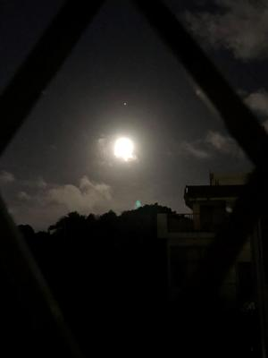

うるがいの話 ある日
最新: 位牌
うるがいとは 前提知識です
カニの画像をクリックすると『うるがいの話』サイトを表示します
うるがい(ｳﾙｶﾞｲ urugai)とは、『もずくがに』の名前でとても大きくなります。
たながー（ﾀﾅｶﾞｰtanagaa）とは手長えびのことで、何種類かあり大きいのは車 エビぐらいになります。
ぶながー(bunagaa)とは、赤い髪の毛、赤い身体、そして身長は１ｍ２０ｃｍ ぐらい、川の蟹を食べているの目撃された。場所は沖縄県国頭郡大宜味村のと ある村僕の隣近所に住んでいる爺さんから、聞いた話です。
2021年08月23日 (月）
位牌
16:29

朝から、お盆の後片付けをする。そして、新しく仏壇をセット手を合せる。位
牌などの仏壇仏具は実家にあった物だ、この位牌は何時からと考える。私が小
学生の時に糸満のとある家に行き、さらに実家でも糸満の怖そうなオバーが仕
切って、糸満と大宜味村とで「うちカビ」を燃やしたりした出来事を覚えてい
る。あれか、恐らくその時に位牌を分家したのだろう。その行事は何時だった
んだろう、次良とウトの三男として明治３６年２月２８日に生まれた父親の父
さんは、武太とカメの長女として生まれた明治３８年３月１８日生まれの２歳
年下の妻と一緒に、フィリピンから沖縄に船で移動中、米軍の攻撃によりフィ
リピン群島海上で死亡と戸籍にある。恐らく二十五回忌に当たる１９６９年の
年に法事をしたのだろう。昨日読み終えた本に
平凡な一人の人間の一生を考えてみましても、誕生・入園・入学・入社・結婚
・わが子の誕生・定年退職、そして死亡、といったことになるでしょうし、。
おや、私は最後の段階になっている。そういえば、部活のクブ先輩が退職した
ら人生終わりだよ！と言っていた。コロナが収まった来年（多分）は働くぜ。